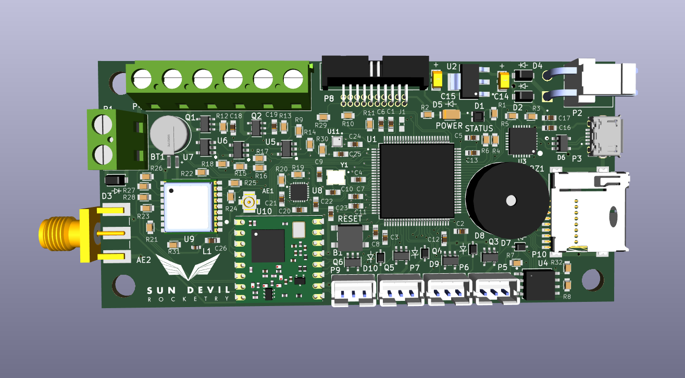

Flight Computer - Sun Devil Rocketry
Most of SDR's work is open source. See this project for yourself.
About
The flight computer is the main focus of my work with Sun Devil Rocketry. The first two revisions were originally designed by Colton Acosta, the founder of the avionics team at SDR. In amateur rocketry, there are a number of different types of consumer avionics available. All of these have differing levels of capability, from the simplicity and reliability of EasyMinis to more advanced, full feature packages like the Fluctus. The Sun Devil Rocketry Flight Computer was designed and built in-house to be on the full-feature end of the scale and allow us to customize it for the needs of the club.
Hardware Capabilities
As a full-feature flight computer, this was designed to be as versatile as possible to fill whatever roles the club needs. Among the peripherals supported are:
| Name | Description | Protocol |
|---|---|---|
| IMU | Inertial Measurement Unit: A 6-axis sensor that combines accelerometer and gyroscope data. | I2C |
| Barometer | An atmospheric pressure sensor. This can be used to determine the altitude of the flight computer. | I2C |
| GPS | Determines the position of the flight computer and provides it via a standardized NMEA message. | UART |
| USB | Communicates with external devices, such as a PC running SDEC. | UART |
| Flash | Allows non-volatile storage of flight data and preset/configuration settings. | SPI |
| Ignition Terminals | The flight computer has three sets of screw terminals for GPIO. All three can be used to check the continuity of a circuit, and two can output voltage to light an e-match for ejection charges. The continuity-only terminal is used to connect a switch to arm the flight computer for launch. | GPIO |
| Servo | There are four PWM servo ports on the flight computer. These are used to change fin angles in flight for active stabilization. | GPIO (PWM) |
| LED | The status LED communicates information about the current state of the flight computer (e.g. red for error handling, other colors to indicate calibration, USB terminal, armed, etc.). | GPIO |
| Buzzer | The (active) buzzer communicates information about state transitions. Certain sequences indicate error handling, arming, calibration, etc. | GPIO |
| LoRa | A long range radio antenna. This is currently in development by our team. | SPI |
| Magnetometer | Measures the magnitude and direction of the earth's magnetic field, which is useful for sensor fusion. Not currently in use, but the PCB was designed and built with this sensor. | I2C |
| SD | Allows saving files to a FatFS formatted SD card. Not currently in use as flash memory provides the storage we need. | SD Bus |
Software/Firmware Capabilities
Our current software application combines the capabilities of all of those that came before it. It is capable of high-speed data logging with active control, parachute deployment, and wireless telemetry in development to be released in the near future.
It also comes with a robust configuration system allowing it to be customized to each internal program's needs. Pictured is a subset of the configuration selections for AHPR's Nautilus two-stage, which launched with the SDR flight computer in its booster in October 2025.
My Contributions
I started with the Avionics team in Fall 2024, so I've been working with the team for just over a year at the time of writing. In that time, I've had the chance to contribute to a bunch of different features on the flight computer.
Avionics Developer | September 2024 - March 2025
- Designed and implemented a finite state machine for the active roll application, which was in early development at the time.
- Updated application-level flash memory module to support the storage of preset data (pre-calibrated offsets and servo angles).
- Implemented a basic unit test framework to verify the GPS driver.
In March, the avionics team re-structured to include multiple subteams rather than one disorganized unit. Because of my work as a generalist throughout the Flight Computer project, I was picked to be the first lead of the Firmware subteam.
Avionics Firmware Lead | March 2025 - Present
- Led an organized effort to verify the Data-Logger and Canard firmware applications to certify them for use in the April 2025 launches.
- Designed and led a team to build a new unified application to combine all of the previous capabilities of the flight computer under one app.
- Instituted new software quality assurance practices based on my experience in the industry to increase reliability and maintainability.
- Identified performance improvements that led to an over 30x speedup (7hz to over 300hz) in execution speed, significantly increasing data integrity and control responsiveness to the level of commercial flight computers.